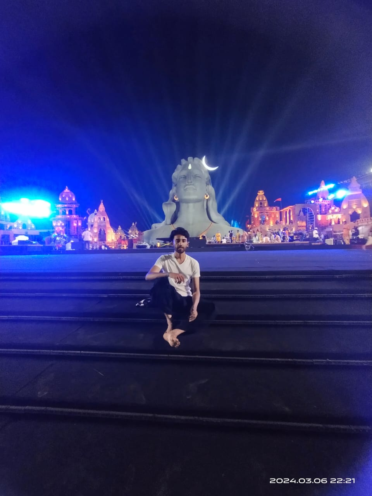

It will suck you in. Cost you your life!
Start at your own risk.
Volunteering at Isha is a surefire way to loose yourself and in the process all sense of what is yours.
Soon you'll see you'll have no will of your own and will work without discretion whatever task's been assigned to you.
Afraid .. ha ha ha 🤪?? 😂 Well don't be.
Indeed! Being a volunteer is stretching,
it breaks limitations and because of this,
it's absolutely fantastic.
While logically it may seem frightening, experientially it is so overwhelming that you'll regret not volunteering earlier
Isha foundation has grown on the shoulders of volunteers. Most of them untrained and unqualified for the job they're performing but still with a heart that's exploding with a sense of devotion and offering.
And look at the result:
They've built a foundation so strong there's no parallel in the world. You'll say so too once you visit Isha yoga coimbatore.
It's a space that's so profound, it will knock you from your core.. With all its energy, exuberance and sanctity.
Isha volunteers are the most committed and inclusive group of people you'll find any where on the planet…giving their time, effort and money for the wellbeing of all.. whether through spiritual programs or outreach efforts.
Their work ethics are praised by CEO's of top companies and their service always leaves people coming to Isha programs humbled.
Why do they do this?
Their lives had once been deeply touched and they've tasted transformation in their way of being .
It was such a beautiful experience that we can't keep it all to ourselves. And we do this without any coercion..with joy and a sense of offering.
You'll do it too. Once you taste a drop of this sweetness that Sadhguru so willingly offers.
Boy oh boy! It's exciting. 🤩 So, yes. Volunteering at Isha has been exciting for me as this brings in an experience and satisfaction that I never get in the normal course of work. Now, I search for opportunities that brings me back to connect and contribute at Isha. This keeps me going and helps me do my best in all walks of my life.
This isha mahashivratri 2024 was the world's largest event and if you have been there on that night ,a night of awakening. you must've seen how well organised everything was , from the moment you enter the velliangiri mountain premise , get ur car parked, enter inside the isha either from malaivasal or neelavasal or sarpavasal entrance and get comfortable with ur sitting. whatever you saw around you 80-90% of all that was done by us "we isha volunteers".
By the grace of Sadhguru able to contribute in making the world's largest event. And me myself was there in parking slot P13 green zone(that was the biggest parking slot among all 25 different parking slots available there for the service of mahashivratri guests) I was standing there along with my team members for 24 hrs from morning 7 am on 8th of March to morning 7 am on 9th of March and the intensity of the volunteering there was insane .
And that's all was gone like a moment, no impact on my self, felt zero physical labour, zero mental harassment, I felt so energetic throughout the activity that was for real I felt that upsurge of energy from the base of my spine to the head ,that sensation was there for a very long time in my system , from midnight it started to vibrate in the base of my spine and it was there untill the morning sunrise .
That was the only reason why I was high amidst of that intense activity. It was a non stop movement of guests vehicles 🚗 🚨 throughout that 24 hrs of duration , and I was standing making ways for those vehicles along with my team, by whistling whole duration, and guiding the guests for whatever they ask for
in the middle of burning sun during day and biting cold during the night and inhaling the air of floating dust . we parking department teams made the exit that premise rush free for the guests, we only make them help get parked in comfortably.
It is in my experience is to break the years long concrete invisible wall of individuality. It is in my experience is to break my limitations, to expand myself and become a part of the greatest.
